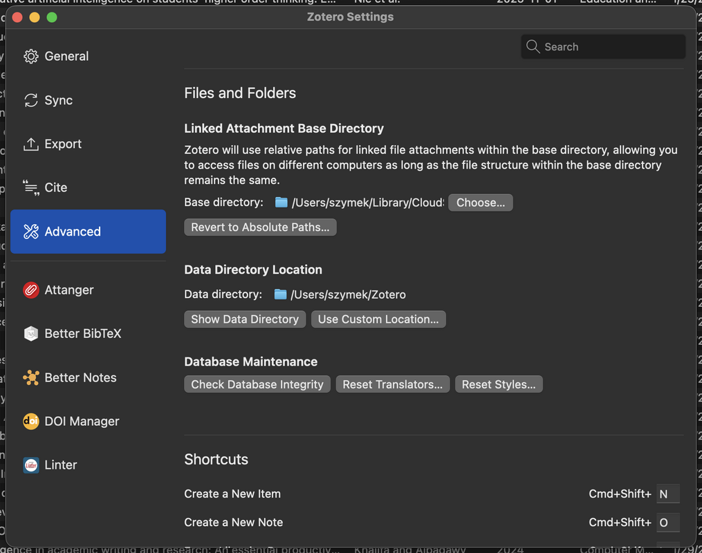
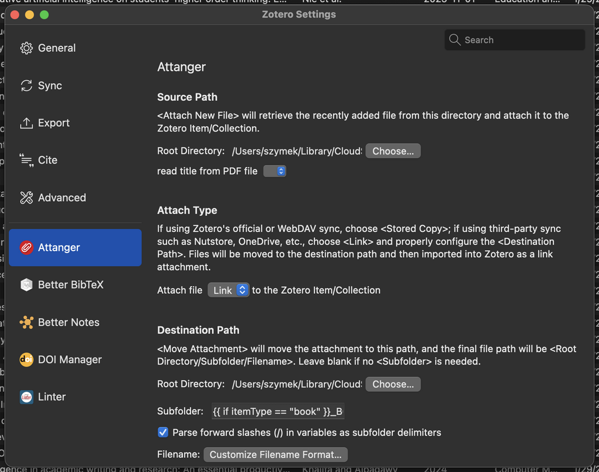
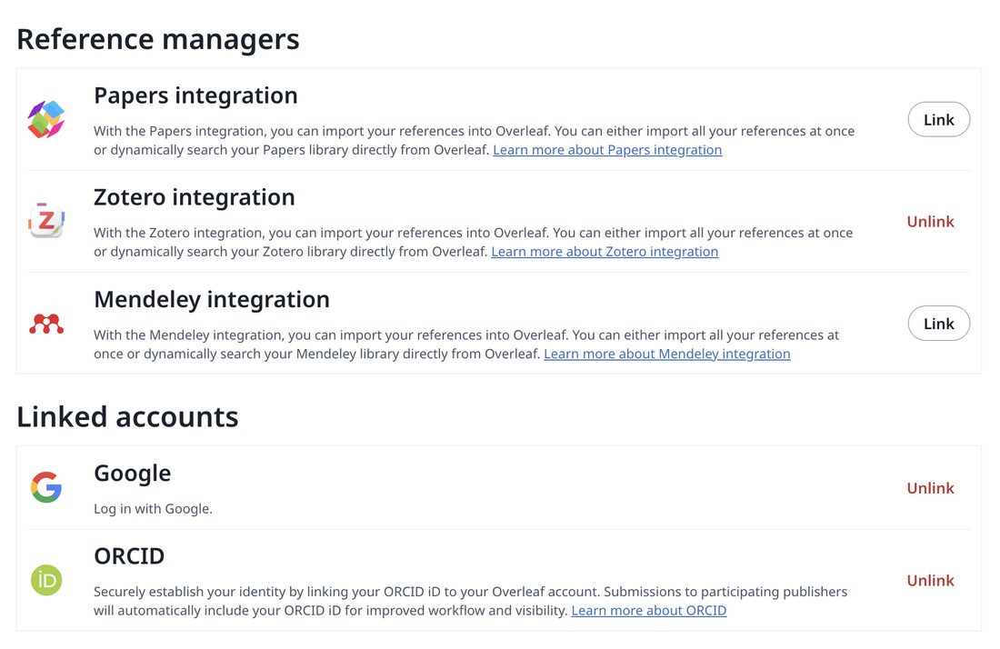
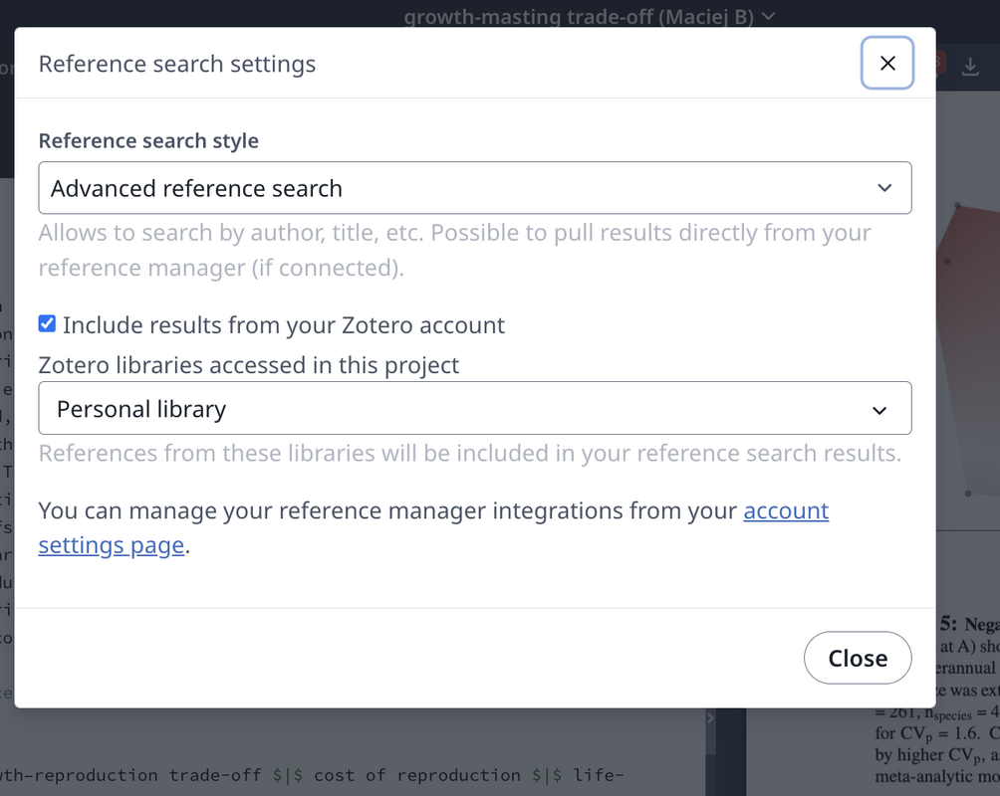
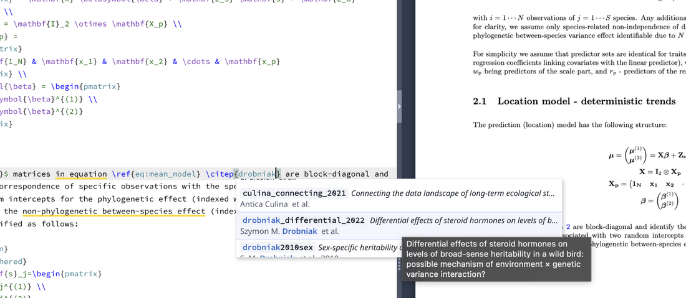

Here’s how you usually use your reference manager.
You begin with good intentions.
The database feels clean.
You save papers directly from journals, PDFs attach themselves automatically, and citations appear in Word or LaTeX like magic.
For a while, everything works.
Then the volume grows.
A few hundred papers become a few thousand. Some PDFs are called “fulltext.pdf”. Others are cryptic publisher strings. Metadata varies depending on the source of the item. You accidentally save the same paper twice — once from the journal site, once from Google Scholar, once as a preprint. Some books sit in Zotero’s hidden storage, others in separate folders because you wanted to keep chapters together. You annotate on one device and later realise there’s another version of the same PDF elsewhere.
Nothing breaks dramatically. It just slowly degrades.
Searching still works, but feels less reliable. Browsing becomes frustrating. You start vaguely remembering papers you can’t quite locate anymore. The system accumulates content, but it’s increasingly harder to browse. In my case, the progression looked a bit like that – until I discovered Zotero. The software had its ups and downs, but after some major redesigns and updates, it is now probably the best tool I have ever used to manage my article library.
Rethinking the process did not mean just replacing a manager with Zotero, but building a pipeline around it that would enforce structure automatically. Here’s how Zotero made my life – and research – more enjoyable.
Centralising storage
The first change was to move all attachments to a single, visible location.
By default, Zotero stores PDFs in an internal directory with randomly named folders. It’s fine technically, but opaque. You don’t really “own” your library in a transparent way. You have an option to use Zotero’s cloud, but it quickly fills up and is pricey.
Instead, I configured Zotero to store all attachments in one Dropbox folder:
Dropbox/Zotero_Library/
This immediately gave several advantages:
There are small subtleties that have to be adhered to – Zotero syncs its settings across your computers, so the location path is also synced – but of course, each of your Zotero instances will see it only if it’s the same path. This may cause trouble when working on both macOS and Windows machines – their path formats differ. Even if you use just one OS, Dropbox usually sits in your home folder, which means its name (usually your username) has to be consistent across machines. On macOS, you can use symbolic links instead of paths so they always point to the correct folder across multiple machines. The only thing to remember are the key options Zotero names in a confusing way:
Now Zotero acts as a database layer on top of a clean filesystem, rather than a container that hides everything. But this only works if files are named and organised properly. A single folder with thousands of random PDFs would be just as bad. This is where Attanger becomes essential.
The first change was to move all attachments to a single, visible location.
By default, Zotero stores PDFs in an internal directory with randomly named folders. It’s fine technically, but opaque. You don’t really “own” your library in a transparent way. You have an option to use Zotero’s cloud, but it quickly fills up and is pricey.
Instead, I configured Zotero to store all attachments in one Dropbox folder:
Dropbox/Zotero_Library/
This immediately gave several advantages:
- all PDFs are human-accessible;
- everything is backed up automatically;
- synchronisation across devices is instant;
- I’m not locked into Zotero’s hidden storage.
There are small subtleties that have to be adhered to – Zotero syncs its settings across your computers, so the location path is also synced – but of course, each of your Zotero instances will see it only if it’s the same path. This may cause trouble when working on both macOS and Windows machines – their path formats differ. Even if you use just one OS, Dropbox usually sits in your home folder, which means its name (usually your username) has to be consistent across machines. On macOS, you can use symbolic links instead of paths so they always point to the correct folder across multiple machines. The only thing to remember are the key options Zotero names in a confusing way:
- Zotero’s Advanced settings -> Base Directory: this should be your cloud (e.g., Dropbox) folder where the PDFs live
- Zotero’s Advanced settings -> Zotero’s Data directory: can be left default, it’s just some internal Zotero data
- Attanger’s (see below) settings -> Destination Path root directory: should be the same as Zotero’s Base Directory
Now Zotero acts as a database layer on top of a clean filesystem, rather than a container that hides everything. But this only works if files are named and organised properly. A single folder with thousands of random PDFs would be just as bad. This is where Attanger becomes essential.

Zotero - base folder settings
Attanger: automatic naming and folder structure
Attanger (https://github.com/MuiseDestiny/zotero-attanger) lets you define rules for how attachments are renamed and where they are stored, using Zotero metadata fields. Instead of keeping the publisher-provided filename, every PDF is renamed deterministically using the author's name, year, and title.
So instead of:
1-s2.0-S0169534719301234-main.pdf
you get:
Nakagawa_2021_MetaAnalysisOfVariance.pdf
or for multi-author papers:
Drobniak_et_al_2022_EvolutionaryDynamicsOfVariance.pdf
For folder structure, I separate papers and books. Journal articles go into folders by journals and years:
Papers/Journal1/2024/
Papers/Journal1/2023/
Papers/Journal2/2022/
Books go into topic-based folders. Here I use Zotero’s “Extra” field as a control variable. For example, in the Extra field I might write:
Statistics
Attanger reads that and automatically places the PDF in:
Books/Statistics/
This gives a clean and flexible system:
No dragging files around. No manual renaming. Import a PDF, and it ends up in the right place with the right name. Of course, the names can have a custom format – just design something using Attanger's field identifiers. For complex sorting (like my books), the folder definition string in Attanger can use more complex syntax with “if” conditional statements.
Attanger (https://github.com/MuiseDestiny/zotero-attanger) lets you define rules for how attachments are renamed and where they are stored, using Zotero metadata fields. Instead of keeping the publisher-provided filename, every PDF is renamed deterministically using the author's name, year, and title.
So instead of:
1-s2.0-S0169534719301234-main.pdf
you get:
Nakagawa_2021_MetaAnalysisOfVariance.pdf
or for multi-author papers:
Drobniak_et_al_2022_EvolutionaryDynamicsOfVariance.pdf
For folder structure, I separate papers and books. Journal articles go into folders by journals and years:
Papers/Journal1/2024/
Papers/Journal1/2023/
Papers/Journal2/2022/
Books go into topic-based folders. Here I use Zotero’s “Extra” field as a control variable. For example, in the Extra field I might write:
Statistics
Attanger reads that and automatically places the PDF in:
Books/Statistics/
This gives a clean and flexible system:
- papers are chronological;
- books are thematic;
- everything is automatic.
No dragging files around. No manual renaming. Import a PDF, and it ends up in the right place with the right name. Of course, the names can have a custom format – just design something using Attanger's field identifiers. For complex sorting (like my books), the folder definition string in Attanger can use more complex syntax with “if” conditional statements.

Attanger root folder settings

Example Attanger folder definition conditional statements
DOI Manager
Once files are stored cleanly, the next weak point is metadata—especially DOIs. In theory, every modern academic paper has a DOI. In practice, many Zotero entries are missing them or contain malformed ones, depending on how the paper was imported.
This matters a lot more than it seems. The DOI is the unique identifier that allows Zotero to fetch authoritative metadata from CrossRef and other services. It’s also the most reliable way to detect duplicates.
The DOI Manager (https://github.com/bwiernik/zotero-shortdoi ) plugin scans your library and:
Once files are stored cleanly, the next weak point is metadata—especially DOIs. In theory, every modern academic paper has a DOI. In practice, many Zotero entries are missing them or contain malformed ones, depending on how the paper was imported.
This matters a lot more than it seems. The DOI is the unique identifier that allows Zotero to fetch authoritative metadata from CrossRef and other services. It’s also the most reliable way to detect duplicates.
The DOI Manager (https://github.com/bwiernik/zotero-shortdoi ) plugin scans your library and:
- finds missing DOIs;
- validates existing ones;
- corrects errors.
Browser integrators: removing problems at the source
I use Zotero’s connectors for both Chrome and Safari. This is standard, but in the context of the whole pipeline it becomes especially powerful.
With one click on a journal page:
Because Attanger and the other plugins are configured to run automatically, that single click effectively triggers the entire pipeline:
paper saved → metadata cleaned → DOI verified → PDF renamed → file moved to correct folder → synced via Dropbox.
I use Zotero’s connectors for both Chrome and Safari. This is standard, but in the context of the whole pipeline it becomes especially powerful.
With one click on a journal page:
- metadata is imported directly;
- the PDF is downloaded automatically, and into the chosen collection subfolder (e.g., thematic).
Because Attanger and the other plugins are configured to run automatically, that single click effectively triggers the entire pipeline:
paper saved → metadata cleaned → DOI verified → PDF renamed → file moved to correct folder → synced via Dropbox.
Zotero Linter: continuous metadata hygiene
Even with good imports and DOIs, metadata slowly drifts into inconsistency. Common issues include:
The Zotero Linter plugin applies formatting rules across the library and automatically fixes many of these.
For example:
nature communications becomes Nature Communications
SMITH, J. becomes Smith, J.
2022-00-00 becomes 2022
It also fixes notoriously buggy journal abbreviations.
Even with good imports and DOIs, metadata slowly drifts into inconsistency. Common issues include:
- inconsistent capitalization of journal names;
- author names in all caps;
- stray spaces and punctuation;
- malformed dates.
The Zotero Linter plugin applies formatting rules across the library and automatically fixes many of these.
For example:
nature communications becomes Nature Communications
SMITH, J. becomes Smith, J.
2022-00-00 becomes 2022
It also fixes notoriously buggy journal abbreviations.
Zoplicate: controlling duplicates before they spread
In any large library, duplicates are inevitable. You save the same paper from different sources. One entry has a DOI; the other doesn’t. Left unchecked, duplicates accumulate and slowly pollute the library.
Zoplicate scans the library for similar entries and groups potential duplicates. You can then merge them intelligently, preserving:
The result is one clean canonical entry per paper. Zoplicate (https://github.com/ChenglongMa/zoplicate) can run automatically and merge duplicates, e.g., giving precedence to the newer or older version.
In any large library, duplicates are inevitable. You save the same paper from different sources. One entry has a DOI; the other doesn’t. Left unchecked, duplicates accumulate and slowly pollute the library.
Zoplicate scans the library for similar entries and groups potential duplicates. You can then merge them intelligently, preserving:
- PDFs;
- notes;
- annotations.
The result is one clean canonical entry per paper. Zoplicate (https://github.com/ChenglongMa/zoplicate) can run automatically and merge duplicates, e.g., giving precedence to the newer or older version.
Annotations and multi-device work
Because PDFs live directly in Dropbox and Zotero links to them rather than hiding copies, annotation workflows become simple.
You can:
Changes sync automatically. Zotero always points to the same file. There’s no confusion about versions, no duplicated annotated copies.
Because PDFs live directly in Dropbox and Zotero links to them rather than hiding copies, annotation workflows become simple.
You can:
- annotate on your laptop;
- open the same PDF on a tablet;
- continue reading elsewhere.
Changes sync automatically. Zotero always points to the same file. There’s no confusion about versions, no duplicated annotated copies.
Synchronised referencing
Keeping your references is one thing; using them is another. Even if your PDFs are stored in your Dropbox, being able to use them efficiently is key. Zotero does – of course – provide an integrated reference formatter that connects to your database and lets you cite papers in text processors such as MS Word and, recently, Google Docs. The real power lies in the advanced use of BibTeX files. Two options are particularly amazing.
First, if you use Overleaf, the best thing you can do is to integrate Zotero with it. In your Overleaf account settings, turn on the Zotero link (in the Reference Managers section). Then, in settings for a specific document, turn on Advanced Reference Search in the Reference Search section. Your Zotero is now in sync with your Overleaf. Every time you type \cite or \citep – Overleaf lets you search your entire Zotero library with any prompt (authors, title part, journal name), hinting at the best matching refs. Adding any of them automatically updates your TeX document’s BibTeX file.
Secondly, with the Better BiBTeX plugin (https://retorque.re/zotero-better-bibtex/) you can create dynamically updated reference files that automatically update every time their linked collection in Zotero gets updated. A perfect option for non-Overleaf projects version-controlled via, e.g., GitHub (for example – if a BibTeX is used in a markdown document).
Keeping your references is one thing; using them is another. Even if your PDFs are stored in your Dropbox, being able to use them efficiently is key. Zotero does – of course – provide an integrated reference formatter that connects to your database and lets you cite papers in text processors such as MS Word and, recently, Google Docs. The real power lies in the advanced use of BibTeX files. Two options are particularly amazing.
First, if you use Overleaf, the best thing you can do is to integrate Zotero with it. In your Overleaf account settings, turn on the Zotero link (in the Reference Managers section). Then, in settings for a specific document, turn on Advanced Reference Search in the Reference Search section. Your Zotero is now in sync with your Overleaf. Every time you type \cite or \citep – Overleaf lets you search your entire Zotero library with any prompt (authors, title part, journal name), hinting at the best matching refs. Adding any of them automatically updates your TeX document’s BibTeX file.
Secondly, with the Better BiBTeX plugin (https://retorque.re/zotero-better-bibtex/) you can create dynamically updated reference files that automatically update every time their linked collection in Zotero gets updated. A perfect option for non-Overleaf projects version-controlled via, e.g., GitHub (for example – if a BibTeX is used in a markdown document).

Overleaf - linking Zotero to Overleaf

Overleaf - selecting advanced referencing style

Overleaf - citation accessing personal library
I-DEEL article link